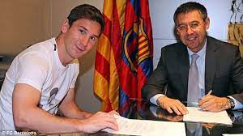

Lionel Messi
Lionel Andrés Messi, whose full name is Lionel Andrés Messi, is one of the greatest football (soccer) players of all time.
Born on June 24, 1987, in Rosario, Argentina, Messi has
Achieved
numerous accolades and Records throughout his career.
Here's a brief biography of his life and career :
Early Life:

|
- Lionel Messi was born into a middle-class family in Rosario, Argentina.
- At a young age, he displayed incredible football talent, and his family recognized his potential, then he began playing for the local club, Newell's Old Boys, at the age of seven.
|
Move to Barcelona:
- Messi's talent caught the attention of FC Barcelona, and at the age of 13, he and his family relocated to Spain so he could join Barcelona's youth academy, La Masia.
|

|
- He made his first-team debut for Barcelona in 2004 at the age of 17.
|
Club Career with Barcelona:
- Messi enjoyed unparalleled success at FC Barcelona, winning numerous domestic and international
titles
, including multiple UEFA Champions League and La Liga
titles
.
- During his time at Barcelona, he formed a prolific attacking trio with Neymar and Luis Suárez, known as MSN.
- Messi won multiple Ballon d'Or
awards
as the world's best player while at Barcelona.
|

|
Transfer to Paris Saint-Germain (PSG):

|
- In August 2021, due to financial constraints faced by Barcelona, Messi left the club and signed with Paris Saint-Germain (PSG) on a two-year contract.
|
Transfer to Inter Miami:
- Following confirmation of his departure from PSG, Messi was linked with a return to former club Barcelona, as well as with a big-money move to Saudi Professional League club Al-Hilal.
- His eventual decision to sign for Major League Soccer club Inter Miami was communicated to Barcelona president Joan Laporta by 5 June 2023.
- Barcelona were unable to sign him due to financial constraints.
|

|